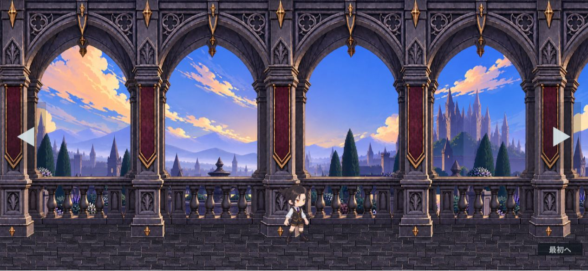
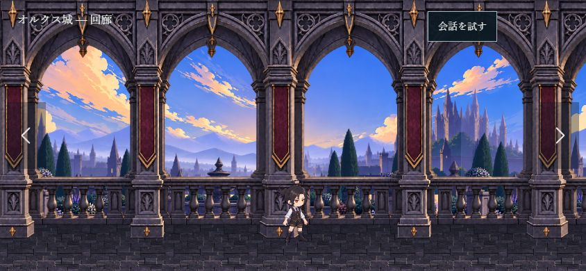
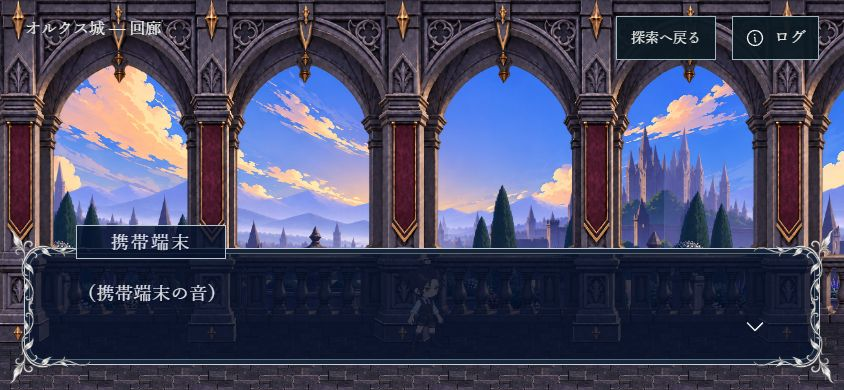
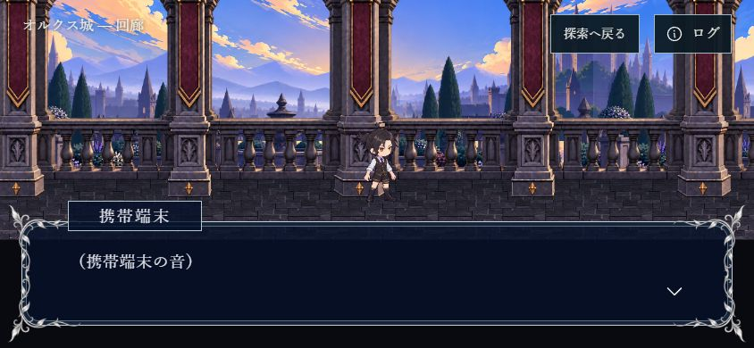

参照：原作者確認済みの銀細工と台詞枠（旧・仮背景）
今回：銀細工を維持し、送られた仮設定を適用



公開版の1266×586撮影を844×390に正規化。HTMLは844×390・密度1。操作ボタン・場所名は見本用、圧縮・描画方式はUnityと異なる。


送られた設定JSONを両方に使用。Bは足元を122px上へ移す見本だけの構図変更。背景素材・配置の正本は変更しない。どちらも本編未反映。
銀細工・書体・名前札・本文・次への配置を維持。高さ117、透過20、丸み20、下地#051029、文字#e6e7efは原作者の仮設定による意図的な差。